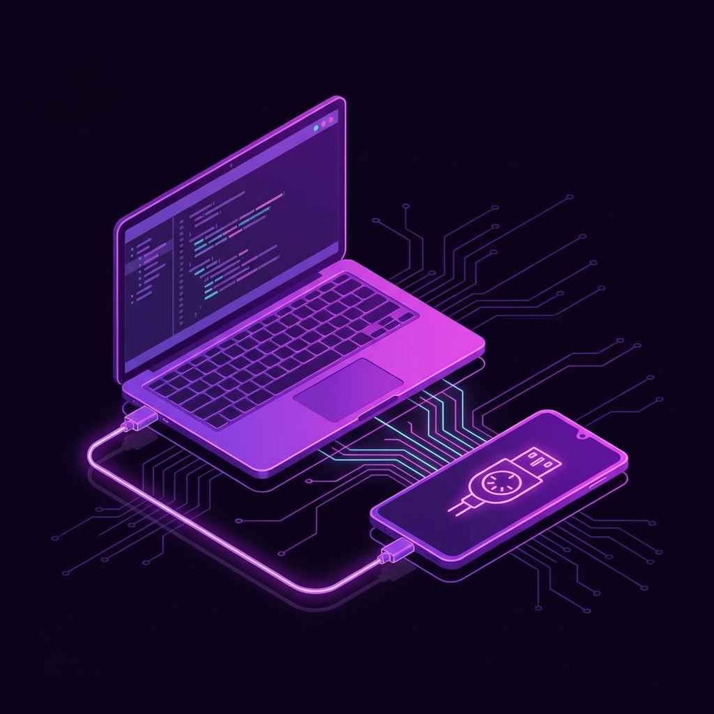

How to Use MIDIPadidi
Complete guide to connection and controls.
Getting Connected
Step 1: USB Connection
To establish a MIDI connection with your computer:
- Connect your Android device to your computer using a USB cable.
- Swipe down from the top of the screen to open the Notification Shade.
- Look for a notification from Android System labeled "Charging this device via USB" (or "USB charging this device").
- Tap the notification to open USB Preferences.
- Under "Use USB for", select MIDI.
Pro Tip: For a permanent setup:
- Enable Developer Options (guide here).
- Go to Settings > Developer options > Default USB configuration.
- Select MIDI.

Using the Touch Controller
The Touch Surface translates your finger movements into MIDI Control Change (CC) messages, allowing for expressive real-time control of your DAW parameters.
Configuration
Tap the ✏️ pencil icon to open the Edit dialog:
- Name Axis: Assign custom labels to X and Y axes.
- Assign CC: Choose specific MIDI CC numbers.
- Precision:
- Standard (7-bit): Uses values 0-127. Compatible with all standard CCs (0-127).
- High Precision (14-bit): Uses standard MIDI MSB/LSB pairs for values 0-16383 (CC 0-31 only).
Mapping to your DAW
- Enable "MIDI Map" mode in your DAW.
- Touch ONCE on the area labeled "Touch to map X values". This sends a single signal for easy assignment.
- Map the signal to your desired parameter in the DAW.
- Repeat the process for the Y values when prompts.
Use the 🔃 Reload icon to reset the mapping process if you need to start over.
Usage
Simply drag your finger across the colored surface. The X and Y coordinates are sent simultaneously as MIDI data.